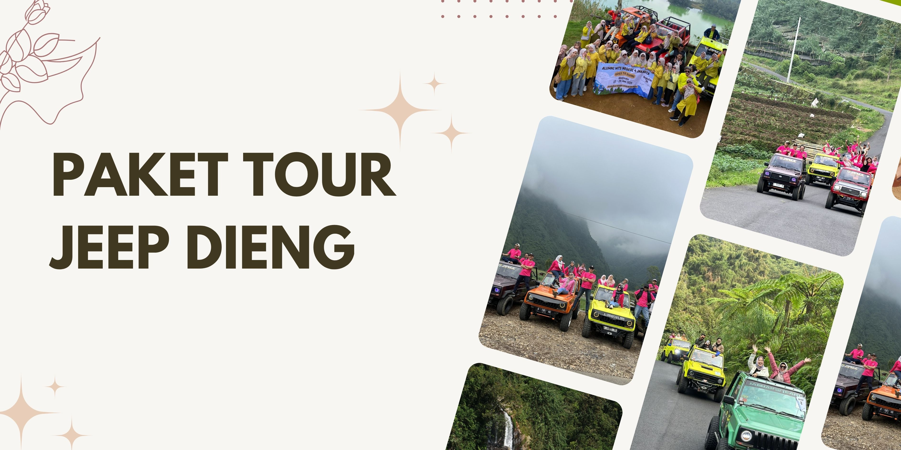

Paket Jeep Dieng – Explore Dieng the Urban Way
Rasakan sensasi jelajah alam Dieng dengan gaya berbeda: naik jeep! Paket ini dirancang untuk kamu yang ingin menikmati keindahan dataran tinggi Dieng lewat jalur offroad, menjangkau spot-spot hits dengan perjalanan yang fun dan anti mainstream. Setiap rute bisa dikustom, tinggal pilih destinasi yang kamu suka atau ikuti rekomendasi dari tim lokal.
Jeep sudah ready bersama driver berpengalaman, cocok buat trip keluarga, grup teman, atau solo traveler yang ingin suasana adventure. Cocok untuk menikmati sunrise, golden hour, hingga explore spot tersembunyi di Dieng — semuanya dengan kendaraan yang siap untuk segala medan.
Destinasi Jeep Dieng
- Bukit Sikunir (sunrise)
- Telaga Cebong
- Kawah Sikidang
- Komplek Candi Arjuna
- Batu Ratapan Angin
- Dieng Plateau Theater
- Taman Pintu Langit
- Pemandian Air Panas Dieng
- Kahyangan Skyline
- Dieng Park
- Bukit Scooter (sunset/sore)
- Air Terjun Sikarim
- Telaga Menjer
- Perkebunan Teh
- Sentra Oleh-oleh & Kuliner
Catatan: Destinasi bisa request, rute dan durasi fleksibel sesuai keinginan. Konsultasikan itinerary impianmu ke tim kami.
Fasilitas
- Jeep offroad Dieng (kapasitas sesuai kebutuhan)
- Driver lokal berpengalaman
- Tiket masuk destinasi wisata pilihan
Panduan Trip Jeep Dieng
Trip ini bisa berangkat dari pagi atau siang, menyesuaikan waktu dan agenda yang kamu pilih. Sangat direkomendasikan untuk membawa kamera, jaket tebal, alas kaki nyaman, dan air minum pribadi. Semua rute aman untuk keluarga, grup, maupun solo traveler.
FAQ Paket Jeep Dieng
Bisa request tujuan wisata sendiri?
Bisa banget, itinerary dan spot wisata bisa kamu tentukan sendiri atau pakai rekomendasi dari driver lokal.
Berapa kapasitas jeep?
Umumnya 3–4 orang per jeep, bisa menyesuaikan jumlah peserta. Untuk grup besar akan disediakan beberapa armada.
Sudah termasuk tiket masuk wisata?
Ya, semua tiket masuk destinasi yang kamu pilih sudah termasuk dalam paket.
Bisa berangkat dari hotel di Dieng?
Bisa, penjemputan bisa langsung dari hotel/homestay di area Dieng atau Wonosobo.